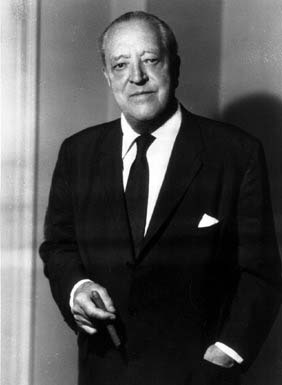
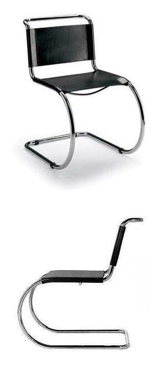
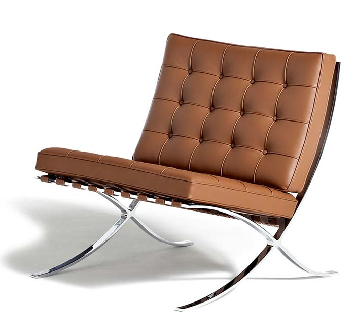
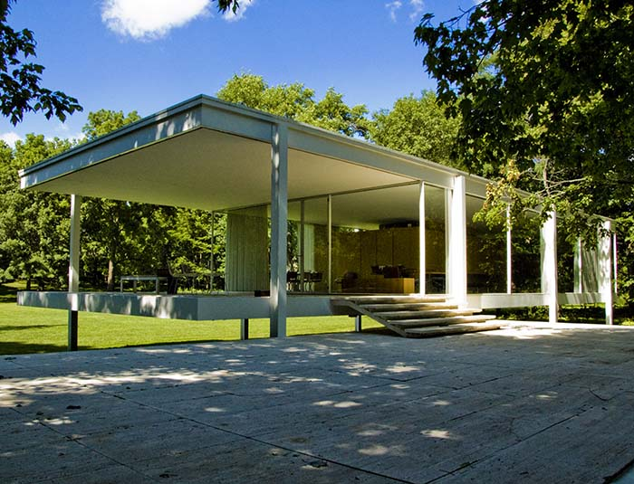
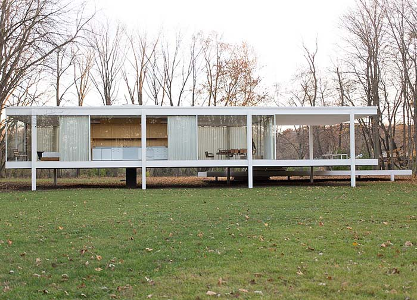
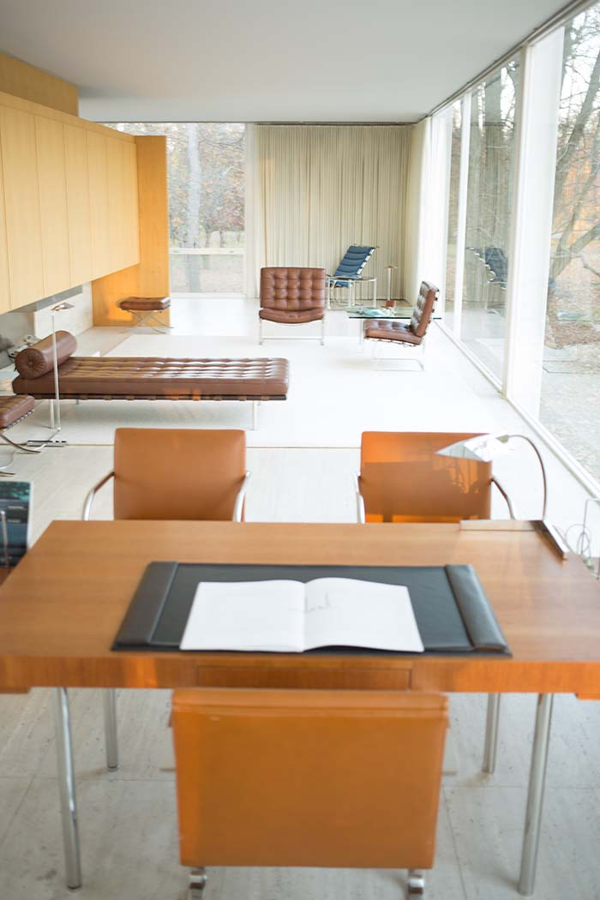
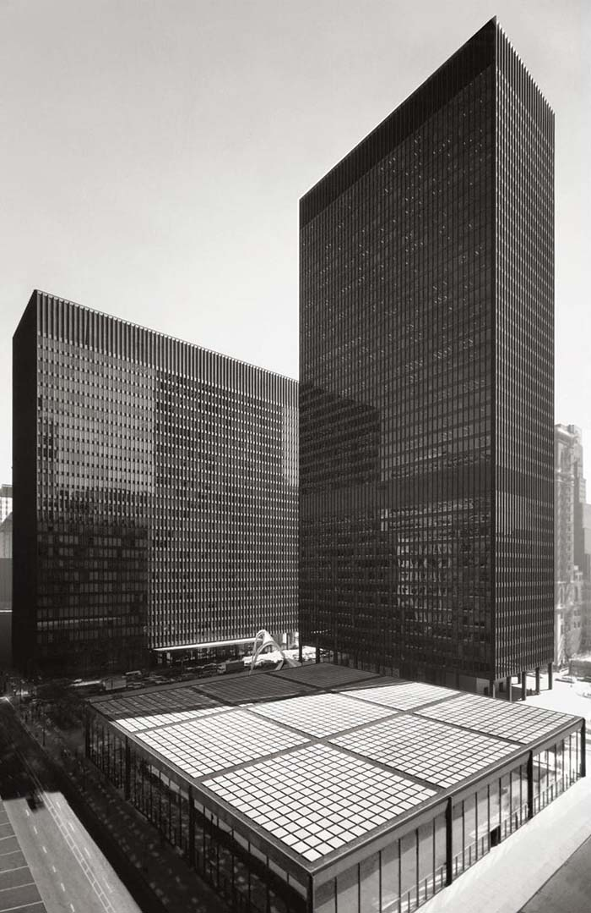

루드비히 미스 판 데어 로헤(Ludwig Mies Van der Rohe)
(1886년 ~ 1969)
- 독일 출신. 1944년 미국으로 이민.
- 20세기 근대 건축을 개척한 건축가.
- 바우하우스 학교의 마지막 교장.
- 바르셀로나 파빌리온, 빌라 투겐트하트, 시카고 IBM 플라자 등.
"Less is more"(적을수록 많다)
.
.

라운지 의자, 1927.
.

바르셀로나 파빌리온 의자, 1929.
.

판스워스 하우스, 1945-1951.
.

판스워스 하우스 외부.
.

판스워스 하우스 내부.
.

시카고 연방 센터, 1964-1974.
.